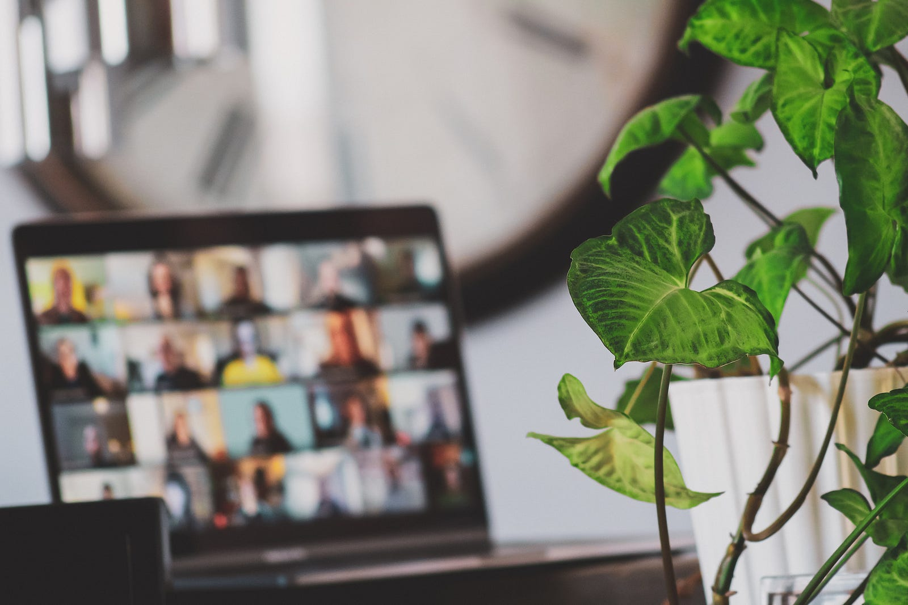

At CivicActions, the concept of remote work has been deeply ingrained in our culture for years — we have been fully remote since we started in 2004! As a company that values open communication and inclusivity, we have consistently embraced innovative tools and practices to foster collaboration and create a sense of togetherness, even when physically dispersed. While many organizations are now catching up to remote-first practices, we are now pros at navigating a culture with a distributed team.

In the early days of CivicActions, our primary mode of communication revolved around email lists. Each project had its own dedicated list, featuring both an internal name for team communication and an external name for client communication. This structured approach allowed us to use subject lines effectively, signaling specific recipients or indicating that a message was meant for everyone. By utilizing our core value of openness, we encouraged all project communications to be conducted on these email lists, fostering transparency and providing opportunities for team members to participate in relevant conversations. Additionally, the team email list served as a space for group discussions. This email-centric communication model proved highly effective for our teams, which typically consisted of 20 to 40 individuals.
Before Slack, we utilized IRC (Internet Relay Chat) as a communication platform, but found it lacking in robustness. We also relied on Skype for direct messaging, primarily using voice calls rather than video. It served as a convenient way to initiate quick conversations by asking, “Can you chat?”
With the introduction of Slack in 2015, we transitioned away from email lists while retaining our commitment to openness. We encouraged team members to communicate in related channels, promoting inclusivity and demonstrating our value of transparency. Initially, some team members hesitated to ask questions they believed they should already know the answers to. However, as individuals became more comfortable and witnessed others’ vulnerability on this platform, they realized that our team didn’t expect everyone to possess all the knowledge. The collective wisdom and expertise of the team became apparent — everyone had valuable insights to contribute, which was made all the more apparent when utilizing such an open platform like Slack for internal communication.
Throughout our history, CivicActions has leveraged various tools to facilitate collaboration and document sharing. Google Docs, for instance, has been an integral part of our workflow for over 13 years. We also utilized Trac as an open-source ticketing system before transitioning to Trello and Jira. Additionally, Atrium played a role in our communication ecosystem as well. For documentation purposes, CivicActions has employed an array of tools to manage knowledge sharing. These include the MoinMoin wiki, Trac for project management, a custom Drupal intranet site, an OpenAtrium Drupal site, and ultimately transitioning to the GitHub Handbook as our primary resource for documentation.
Video conferencing solutions have also played a crucial role in maintaining connection among our remote. Prior to the advent of video capabilities, we employed FreeConferenceCall, relying solely on voice calls. Our team page featured photos of each member, allowing us to familiarize ourselves with colleagues we had yet to meet in person. Over time, voices became recognizable, and when someone interjected into a conversation, they would identify themselves by name, ensuring clarity and understanding. We have also used Asterisk (an open-source VOIP server), and Freeswitch (another open-source VOIP server) in combination with Skype for smaller calls.
Prior to adopting Zoom in 2016, we explored other video conferencing options, including Google Hangouts, BigBlueButton (an open-source video conferencing platform), and a combination of BlueJeans and Google Hangouts for smaller calls.
Throughout our history, CivicActions has been at the forefront of remote work and collaboration, continually seeking innovative solutions to connect and empower our distributed team. By embracing tools like Slack, Zoom, Google Docs, and GitHub, CivicActions has fostered a culture of openness, inclusivity, and knowledge sharing. This commitment to remote work has allowed our team to thrive and deliver exceptional results while maintaining a strong sense of camaraderie, regardless of physical location. It has also allowed team members to embrace more balanced lives, which allow more flexibility for travel, family, and relaxing, without the need for a hectic commute. We are also deeply committed to sustainability, and the removal of the commute also means eliminating a major contributor to climate change. We see this as a win-win!
We’ve also always prioritized intentional in-person time to build upon our relationships and create space to be creative and plan for the future together. We have done in-person annual summits for that connection point. These events serve as a way for us to not only connect more deeply, but also to put our collective minds together to envision our future. We traditionally leave these events feeling energized and full of fruitful ideas to carry us through until our next in-person meeting.
As the world continues to embrace remote work on a larger scale, CivicActions stands as a testament to the power of effective communication, collaboration, and adaptability. By prioritizing openness, leveraging technology, and valuing the contributions of every team member, CivicActions has built a remote work culture that is powered by technology as much as it is bolstered by our human-first approach to balance, openness, and care. As the future of work evolves, CivicActions remains committed to pushing the boundaries of remote collaboration, ensuring that our teams can thrive, innovate, and make a positive impact in the digital space.
Interested in a fully-remote career at CivicActions? Check out our current career opportunities.